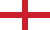
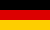
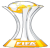

Piłka Nożna

| Nr | Flaga | Kraj | Nazwa ligi |
|---|---|---|---|
| 1 |  | Hiszpania | La Liga |
| 2 |  | Anglia | Premier League |
| 3 | Włochy | Serie A | |
| 4 |  | Niemcy | Bundesliga |
| 5 |  | Francja | Ligue 1 |
W przypadku zdobycia tej samej liczby punktów, klasyfikacja końcowa ustalana jest w oparciu o wynik dwumeczu pomiędzy drużynami, w następnej kolejności w przypadku remisu – różnicą bramek w pojedynku bezpośrednim, następnie ogólnym bilansem bramkowym osiągniętym w sezonie, większą liczbą bramek zdobytych oraz w ostateczności losowaniem.
| Nr | Logo | Nazwa |
|---|---|---|
| 1 | Liga Mistrzów UEFA | |
| 2 |  | Klubowe mistrzostwa świata |
| 3 | Superpuchar Europy | |
| 4 | Liga Europy UEFA |
La Liga - rozgrywki składają się z 38 kolejek spotkań rozgrywanych pomiędzy drużynami systemem kołowym. Każda para drużyn rozgrywa ze sobą dwa mecze – jeden w roli gospodarza, drugi jako goście. Od sezonu 1997/98 w lidze występuje 20 zespołów. W przeszłości liczba ta wynosiła od 10 do 22. Drużyna zwycięska za wygrany mecz otrzymuje 3 punkty (do sezonu 1993/94 2 punkty), 1 za remis oraz 0 za porażkę. Zajęcie pierwszego miejsca po ostatniej kolejce spotkań oznacza zdobycie tytułu Mistrzów Hiszpanii w piłce nożnej. Mistrz Hiszpanii, podobnie jak drużyna z drugiego i trzeciego miejsca zdobywa prawo gry w Lidze Mistrzów UEFA. Czwarta drużyna zdobywa prawo uczestniczenia w fazie Play-off Ligi Mistrzów. Piąta oraz szósta drużyna zdobywają możliwość gry w Lidze Europy UEFA. Również zwycięzca Pucharu Króla startuje w fazie grupowej. Zajęcie 2 ostatnich miejsc wiąże się ze spadkiem drużyn do Segunda División. Trzeci zespół od końca, po zakończeniu rozgrywek rozgrywa mecze barażowe z trzecim zespołem Segunda División o pozostanie w lidze.
Premier League - w Premier League swoje mecze rozgrywa dwadzieścia zespołów. Podczas sezonu (który trwa od sierpnia do maja) każda para drużyn gra ze sobą dwukrotnie, raz na stadionie jednego z nich, a raz na stadionie drugiego - daje to 38 meczów dla każdego zespołu i 380 meczów w całym sezonie. W soboty większość meczów rozgrywanych jest o godzinie 16:00 czasu CET. Są to mecze nietransmitowane w brytyjskiej telewizji. Czasem mecze sobotnie są rozgrywane o 13:30 i 18:30 ze względu na relację telewizyjną. Podobnie jest z meczami niedzielnymi o 14:30 lub 17:00 czasu CET, czasami są też mecze o godzinie 16:00 kiedy angielska drużyna grała wcześniej w czwartek w europejskich pucharach. Natomiast czasem jeden pojedynek kolejki odbywa się w poniedziałek o 21:00 czasu CET również ze względów telewizyjnych. Od sezonu 2016/2017 zdarza się, że mecz inaugurujący weekendową kolejkę jest rozgrywany już w piątek o 21:00 czasu CET. Zwycięska drużyna otrzymuje trzy punkty, za remis dostaje się jeden, natomiast drużyna pokonana nie dostaje żadnego punktu. Kluby są klasyfikowane w tabeli po liczbie punktów, następnie po różnicy goli (bramek zdobytych i straconych). Na końcu sezonu klub, który zgromadził najwięcej punktów, zostaje mistrzem ligi.
Serie A - rozgrywki składają się z 38 kolejek spotkań rozgrywanych pomiędzy drużynami systemem kołowym. Każda para drużyn rozgrywa ze sobą dwa mecze – jeden w roli gospodarza, drugi jako goście. Od sezonu 2004/05 w lidze występuje 20 zespołów. W przeszłości liczba ta wynosiła 16 oraz 18. Drużyna zwycięska za wygrany mecz otrzymuje 3 punkty (do sezonu 1993/94 2 punkty), 1 za remis oraz 0 za porażkę. Zajęcie pierwszego miejsca po ostatniej kolejce spotkań oznacza zdobycie tytułu Mistrzów Włoch w piłce nożnej. Dodatkowo, zwycięska drużyna premiowana jest możliwością umieszczenia na swoim trykocie tarczy Scudetto. Mistrz Włoch, podobnie jak drużyna z drugiego i trzeciego miejsca zdobywa prawo gry w Lidze Mistrzów UEFA. Czwarta drużyna zdobywa prawo uczestniczenia w fazie Play-off Ligi Mistrzów. Piąta oraz szósta drużyna zdobywają możliwość gry w Lidze Europy UEFA. Również zwycięzca Pucharu Włoch startuje w fazie grupowej Lidze Europy. Zajęcie 2 ostatnich miejsc wiąże się ze spadkiem drużyn do Serie B. Trzeci zespół od końca, po zakończeniu rozgrywek rozgrywa mecze barażowe z trzecim zespołem Serie B o pozostanie w lidze.
Bundesliga - rozgrywki składają się z 34 kolejek spotkań rozgrywanych pomiędzy drużynami systemem kołowym. Każda para drużyn rozgrywa ze sobą dwa mecze – jeden w roli gospodarza, drugi jako goście. Od sezonu 1964/65 w lidze występuje 18 zespołów. W przeszłości liczba ta wynosiła 16. Drużyna zwycięska za wygrany mecz otrzymuje 3 punkty (do sezonu 1994/95 2 punkty), 1 za remis oraz 0 za porażkę. Zajęcie pierwszego miejsca po ostatniej kolejce spotkań oznacza zdobycie tytułu Mistrzów Niemiec w piłce nożnej. Mistrz Niemiec, podobnie jak drużyna z drugiego i trzeciego miejsca zdobywa prawo gry w Lidze Mistrzów UEFA. Czwarta drużyna zdobywa prawo uczestniczenia w fazie Play-off Ligi Mistrzów. Piąta oraz szósta drużyna zdobywają możliwość gry w Lidze Europy UEFA. Również zwycięzca Pucharu Niemiec startuje w fazie grupowej Lidze Europy. Zajęcie 2 ostatnich miejsc wiąże się ze spadkiem drużyn do 2. Bundesligi, która od 1974 roku tworzy drugi najwyższy poziom rozgrywkowy w Niemczech. Trzeci zespół od końca, po zakończeniu rozgrywek rozgrywa mecze barażowe z trzecim zespołem 2. Bundesligi o pozostanie w lidze.
Ligue 1 - rozgrywki składają się z 38 kolejek spotkań rozgrywanych pomiędzy drużynami systemem kołowym. Każda para drużyn rozgrywa ze sobą dwa mecze – jeden w roli gospodarza, drugi jako goście. Od sezonu 1970/71 w lidze występuje 20 zespołów. W przeszłości liczba ta wynosiła od 14 do 18. Drużyna zwycięska za wygrany mecz otrzymuje 3 punkty (do sezonu 1993/94 2 punkty), 1 za remis oraz 0 za porażkę.Zajęcie pierwszego miejsca po ostatniej kolejce spotkań oznacza zdobycie tytułu Mistrzów Francji w piłce nożnej. Mistrz Francji, podobnie jak drużyna z drugiego miejsca zdobywa prawo gry w Lidze Mistrzów UEFA. Trzecia drużyna zdobywa prawo uczestniczenia w fazie Play-off Ligi Mistrzów. Czwarta drużyna zdobywa możliwość gry w Lidze Europy UEFA. Ekipy z piątego i szóstego miejsca również mają szansę na udział w tych rozgrywkach (Francja posiada bowiem możliwość wystawienia w nim 3 klubów), jednak zależy to od wyników Pucharu Francji oraz Pucharu Ligi Francuskiej (zwycięzcy tych dwóch rozgrywek również mają możliwość gry w Lidze Europy UEFA, jeśli nie znajdą się w czołowej "trójce" ligi). Zajęcie 2 ostatnich miejsc wiąże się ze spadkiem drużyn do Ligue 2. Trzeci zespół od końca, po zakończeniu rozgrywek rozgrywa mecze barażowe z trzecim zespołem Ligue 2 o pozostanie w lidze.